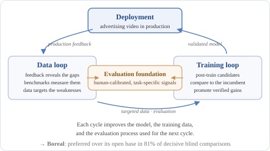
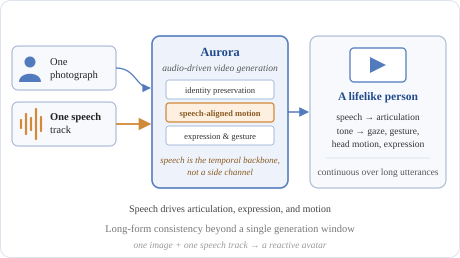
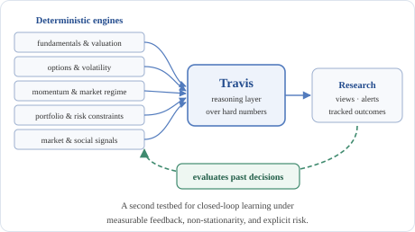

Feiyang (Vance) Chen
Feiyang (Vance) Chen Email: vfychen98 [at] gmail [dot] com |
About me
I am a Founding Research Engineer (#1) at Creatify, where I lead video generation and work closely with co-founder and Chief Scientist Ledell Wu. I joined as the company’s first engineer and have built and shipped every generative model Creatify has released, most recently Aurora and Boreal. My work spans the full model lifecycle, from data pipelines and training to evaluation, inference, and production deployment.
My research focuses on post-training for controllable and efficient video generation. A central contribution of this work is recursive self-improvement (RSI), a post-training paradigm I introduced for video: evaluation, data, and optimization form a closed loop in which each result improves both the next model and the process used to build it. Unlike repeated fine-tuning on a fixed dataset, the loop changes what data to collect, what capabilities to evaluate, and what training strategy to try next. The core challenge is that video has no single reliable verifier: a clip can improve aesthetically while regressing on identity, product fidelity, temporal coherence, audio–visual alignment, or instruction following. I work across text-, image-, audio-, and reference-conditioned video, as well as avatars and long-form video generation, using supervised fine-tuning, preference optimization, and reinforcement learning. Boreal is the first production model from this research program.
This agenda builds on a line of multimodal research I began in 2018, from audio–text learning for affective computing and vision–language representation to robust multimodal systems, AI for science, and generative video. My earlier research includes a publication in Nature Machine Intelligence. At Creatify, I pursue two goals: push the frontier of multimodal intelligence for advertising, and make video generation fast and affordable enough for creators to iterate at scale. Advertising is a demanding testbed: a model must preserve products and people, follow a creative brief, remain coherent over time, and run reliably in production. The goal is not a single impressive clip, but a system that makes it practical to generate and test the next twenty variants. More broadly, I want to build multimodal systems that learn from real use and improve with every cycle.
Outside my work, I independently built Travis, an AI research system for stocks and options and a second domain in which I explore RSI. It combines deterministic quantitative analysis with a language-model agent and uses past decisions to improve the next research cycle. Markets offer a demanding counterpart to video: feedback is measurable, but noisy and non-stationary. Building Travis lets me study whether self-improving systems can become better decision-makers without confusing luck with skill.
Selected Work
Boreal: Recursive post-training for frontier-quality advertising video.
#Recursive Self-Improvement, #Post-Training, #Video Generation
|
 |
Boreal is Creatify’s production text- and image-to-video model for advertising, and the first production proof point for my RSI research program. Its post-training loop turns observed failures and human evaluation into targeted data and model updates, specializing an open video model for product fidelity, creator identity, motion quality, and adherence to the brief. Boreal generates at real-time speed for $0.01 per second of video. In a blind review of production scenario, it was preferred over its untouched open base in 81% of decisive comparisons; on our real-world ad-quality benchmark, it passed 70% of cases versus 50% for the base. I led the full model lifecycle across data, training, evaluation, inference, and deployment. |
-
Towards Recursive Self-Improvement: A Post-Training Paradigm for Video Generation
Feiyang Chen, Ledell Wu. Paper under review. [Launch] [Model] [Creatify Labs] [fal.ai]
Aurora: Audio-Driven Ultra-Realistic Rendering of Reactive Avatars.
#Avatar Generation, #Long-Form Video, #Lip Synchronization
|
 |
Aurora is Creatify’s audio-driven foundation model for expressive, long-form avatar video. From one portrait and one speech track, it generates synchronized lip motion, facial expression, gaze, head movement, and gesture while preserving identity over time. Aurora is available through Creatify, ElevenLabs, and fal.ai. I led the model end to end, from data and training through evaluation, inference, and production deployment. |
-
Aurora: Audio-Driven Ultra-Realistic Rendering of Reactive Avatars
Feiyang Chen, Weikai Xu, Ledell Wu. Paper under review. [Launch] [Model] [ElevenLabs] [fal.ai]
Travis: A self-improving research system for stocks and options.
#Recursive Self-Improvement, #AI Agents, #Quantitative Finance
|
 |
Travis is an independent system I designed and built for equity and options research, and a second domain in which I study RSI. Deterministic engines cover valuation, momentum, market breadth, derivatives, and portfolio risk; a language-model agent synthesizes their evidence into a research view. The system evaluates past decisions and uses the results to guide its next research cycle. Markets make this a demanding testbed: feedback is measurable but noisy and non-stationary, so the system must learn from outcomes without confusing luck with skill. |
Travis — stocks-x.com. Independent Project. Sole developer.
For a full list of publications, see Google Scholar. Earlier research projects are archived here.
Experience
Founding Research Engineer (#1), Creatify AI, Mar. 2024 – Present.
I lead video generation research and engineering, working closely with co-founder and Chief Scientist Ledell Wu on research direction. I built Creatify’s in-house model stack and oversee the full path from data and training to evaluation, inference, and deployment.
Machine Learning Engineer, Coupang, Feb. 2023 – Mar. 2024.
Earlier researcher roles at Salesforce Research (2022), Apple (2020), SenseTime Research (2020–2021), Carnegie Mellon University (2019–2020), and Tsinghua University (2018–2019).
M.S. in Computer Science, UCLA, advised by Prof. Demetri Terzopoulos.
Service & Open Source
I have served as a reviewer for ICLR, ICML, NeurIPS, ACL, and EMNLP.
I was a core member of The Algorithms, ApacheCN, and Doocs. Gitstar Ranking lists my GitHub profile among the top 0.03% of developers by stars.
Miscellaneous
Outside research, I enjoy astronomy and stargazing. The Three-Body Problem is my favorite novel; Sherlock Holmes inspired my GitHub handle and avatar.
My favorite quote:“The thing that’s worth doing is trying to improve our understanding of the world and gain a better appreciation of the universe and not to worry too much about there being no meaning.”